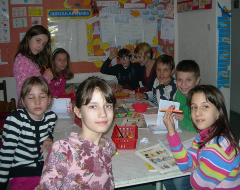

|
|

Kursevi za decu od 5-7 godina
Predškolski kursevi su za nase male đake (5 godina) i male pred-prvake (6 godina). Svi kursevi imaju 70 časova godišnje (od septembra do juna),
a časovi se odvijaju dva puta nedeljno po 45 minuta ponedeljkom i sredom ili utorkom i četvrtkom od 17 do 17.45.
Učimo iz britanskih udžbenika, radnih svezaka i Happyland sveščica. Novu godinu i kraj školske godine proslavljamo
sa roditeljima i pokazujemo šta smo naučili. U grupama od 6 do 10 đaka učimo: Kursevi za osnovce
Tečajevi su usklađeni sa uzrastom deteta, rasporedom u školi, predznanjem i dečjim ambicijama.
Svi kursevi imaju 70 časova godišnje (od septembra do juna). Radi se sa britanskim udžbenicima, pažljivo izabranima kako bi deca što više naučila i kako bi im učenje u osnovnoj školi bilo olakšano.Znanje se redovno proverava i testira.
Grupe imaju od 6 do 10 đaka. Na školskim tečajevima uvek nadjemo vremena da obeležimo rođendane, Halloween, Christmas, St.Valentine’s Day, Mother’s Day, Easter i tako stvaramo prisnu i prijatnu atmosferu za rad. |